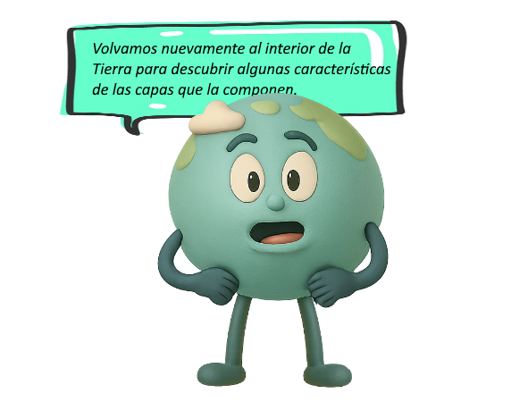
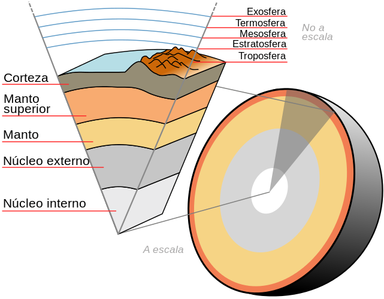
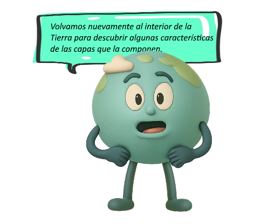
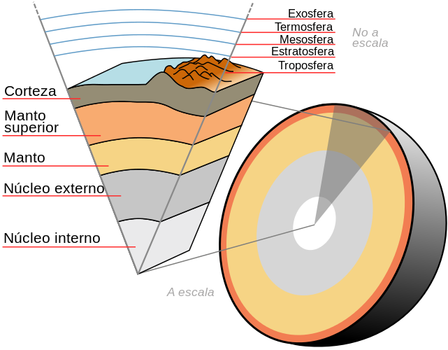

Capas internas de la Tierra:




El manto comprende 2 regiones:
1. manto superior y
2. manto inferior.
El primero ("manto superior"), sólido pero dúctil, se compone de rocas densas que ocasionalmente son expulsadas por los volcanes, mientras que el segundo ("manto inferior"), sólido por completo, tiene una composición similar a la del manto superior.
En el manto se producen corrientes de convección que son parte importante del movimiento de las placas tectónicas. Como consecuencia de las mismas surgen los terremotos.
Se cree que el núcleo tenga una temperatura semejante a la de la superficie solar: 5,400 grados centígrados.
Los expertos creen que su composición consiste en una aleación de hierro y níquel y quizá existe una ínfima cantidad de azufre.
Al igual que las anteriores capas, comprende dos zonas:
El núcleo interno es sólido y sumamente caliente, pero debido a la presión no puede derretirse. Su temperatura es quizá semejante a la de la superficie solar, unos 5,400 grados centígrados.
Por el contrario, el núcleo externo es líquido y se localiza a unos 2,890 kilómetros bajo la superficie terrestre.
Es posible que el núcleo, dada su composición metálica, origine el campo magnético de la Tierra.
Utilizando las pistas, descubre la respuesta oculta para cada pregunta.
Cada pista te acercará más a la solución.
La respuesta es el nombre de una de las capas internas de la Tierra.
Estas son las posibles respuestas que deberás escribir textualmente en el casillero (luego presiona el tilde verde para comprobar):
- Núcleo interno
- Núcleo externo
- Manto superior
- Manto inferior
- Corteza
Obra publicada con Licencia Creative Commons Reconocimiento No comercial Compartir igual 4.0